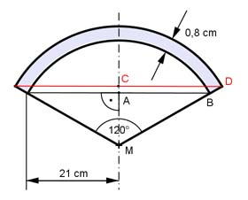

Aufgabe 395 Wie groß ist die Masse m des Deckels aus Grauguss, wenn er eine Dichte von 7,2 g/cm³ hat?  VDeckel = VKugelausschnitt1 - VKugelausschnitt2 Im Dreieck MBA gilt: MB = r2 ∡ AMB = 120°/2 = 60° AB sin 60° = ---- |*MB MB sin 60° * MB = AB |:sin 60° AB 21 cm MB = --------- = --------- = 24,25 cm sin 60° 0,866 AM cos 60° = ---- |*MB MB AM = cos 60° * MB = 0,5 * 24,25 cm = 12,125 cm hKappe2 = r2 - AM = 24,25 cm - 12,125 cm = 12,125 cm Im Dreieck MDC gilt: MD = r1 = r2 + 0,8 cm = 24,25 cm + 0,8 cm = 25,05 cm MC cos 60° = ---- |*MD MD MC = cos 60° * MD = 0,5 * 25,05 cm = 12,525 cm hKappe1 = r1 - MC = 25,05 cm - 12,525 cm = 12,525 cm 2 VKugelausschnitt1 = --- * л * r1² * hKappe1 3 2 VKugelausschnitt1 = --- * л * 25,05² cm² * 12,525 cm = 16 452 cm³ 3 2 VKugelausschnitt2 = --- * л * r2² * hKappe2 3 2 VKugelausschnitt2 = --- * л * 24,25² cm² * 12,125 cm = 14 926 cm³ 3 VDeckel = 16 452 cm³ - 14 926 cm³ = 1 526 cm³ m = VDeckel * ρ = 1 526 cm³ * 7,2 g/cm³ = 10 987 g = 11 kg